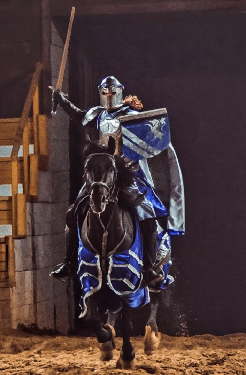

Участие в Рыцарских турнирах
 Всё началось с увлечения книгами в жанре Fantasy.
В какой-то момент описания сражений стало не хватать, захотелось самому научиться владеть мечом.
Спустя 3 года попалось объявление о наборе в конно-трюковое шоу "Рыцарский турнир".
Там обучился верховой езде и вот уже 17 лет Участвую в турнирах на постоянной основе.
За это время стал профессиональным каскадёром-конником и овладел всеми видами средневекового холодного оружия.
Так же стал двукратным призёром чемпионата России по Арт-фехтованию